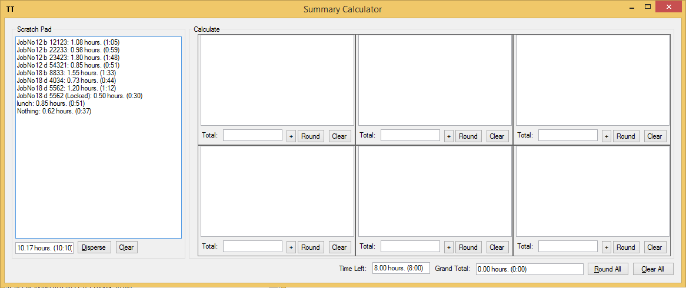
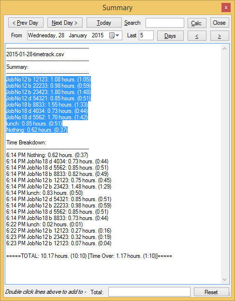
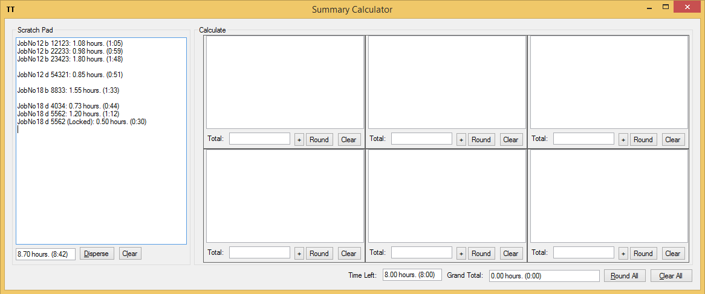
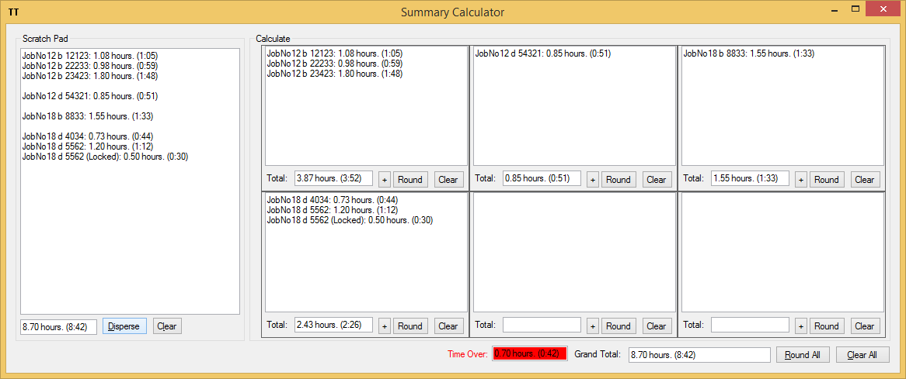
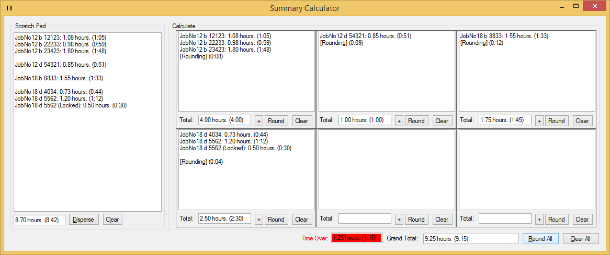
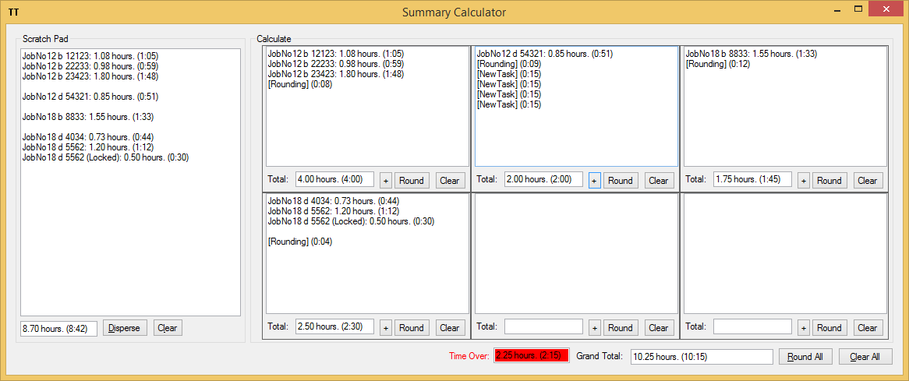

Summary Calculator
Open the Summary Calculator in either of these ways:
- Press
Ctrl+Dfrom the main window. - Open Summary and click
Calc.

The Summary Calculator is designed to help you group tasks, round time, and copy totals into your timesheet.
Start from selected lines
If you select lines in Summary before opening the calculator, TinyTracker loads only that selected text.

If you open the calculator without selecting anything, TinyTracker loads the first summary block for the current day.
Scratch pad
The left side is the scratch pad.
Use it to:
- paste or edit summary lines
- remove lines you do not need
- group related work together
- check the total time for everything in the scratch pad
Group tasks with blank lines
Separate groups with a blank line, then click Disperse.
Example:

After you click Disperse, TinyTracker places each group into its own calculator on the right.

Round time
Each group calculator has a Round button, and the main form has a Round All button.

Rounding uses the Summary calculator - rounding minutes setting.
- A positive value rounds up.
- A negative value rounds down.
Add extra time
Each group calculator has a + button.
It inserts a [NewTask] line using the Summary calculator - add task minutes setting.

Copy totals
Each group calculator has a C button that copies the group total.
The copied format depends on Summary calculator copy mode:
- decimal hours
HH:MM
View Date and Week
The bottom of the scratch pad includes:
View Dateto load one day's summary into the scratch padWeekto load a 7-day total ending on the selected date
Time Left and Grand Total
The right side of the window shows:
Grand Totalfor all visible group calculatorsTime LeftorTime Overfor the working day
This comparison uses your Working minutes per day setting.